Overview
The first step in creating a process is to define its tasks. In ProcessMaker, a task is a logical group of sequential steps, sharing a common goal. Tasks can be assigned to different users or groups of users, so that a process can coordinate the activities of different people or groups in an organization.
Note: Remember that for cases to be executed in ProcessMaker, it is mandatory to have a start event assigned to the first task as well as the users/groups that will have the ability to work on the process.
Adding Tasks
The Quick Toolbar that appears when an element is selected can be used to convenient add the next element in the design, such as events, gateways, tasks and sub-processes.

Tasks have the drag & drop property, so to add a new task drag the icon from the toolbox and without releasing the mouse button and drop it into the Process Map.
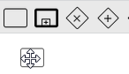
Tasks are created by default with the name "Task...." starting the numbering in 1:

To change the name of a task, right click on the task and select the option "Edit Label":
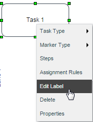
Another option to change the label of the task is to double click on the task's name to enable the edition mode:
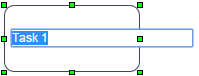
Note: Take into account that the name of the task should not be changed when there are cases being running or assigned to the task. If needing to change the name of the task, then take into account that cases that are assigned to the task will not be updated in any list.
Connecting Tasks
The elements added in the Process Map have the Quick Toolbar, which shows designers the possible next elements to be added to the design. To connect a task to another element simply click on it and the following options will be shown.
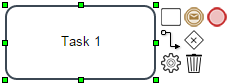
A task can be connected to another task, to an intermediate event, to an end event, or to a gateway. The flow option allows connecting the task to an already added element in the process map, the engine option is the shortcut to view the task properties, and the trash option is the shortcut to remove the task.
For example, in order to connect the task to another task, just click on the task option and place it in the Process Map.
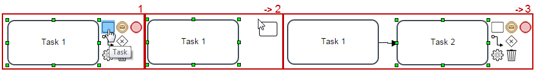
In case you already have two tasks set in the Process then, click on the task and from the Quick Toolbar chose the connect option. Click on it and it will display a line that is the connection between tasks. If the connection can be made the element in the Process will turn green. If not then it will turn red. In this example, the connection between this two task can be done so, click on the second task to see and arrow that can bond this task.
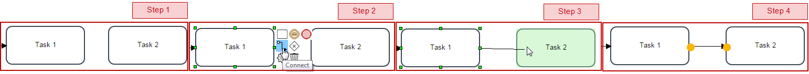
The task context menu is the menu displayed when right clicking on a task.

Each of these options are described in the following sections.
Task Types
Task types are intended to model processes that are technically executable. However, only the Empty and Script tasks are supported by the ProcessMaker engine. At the moment, the rest of the task types are merely informative.
To view the available task types, right click on the task and hover the mouse over the Task Type option:
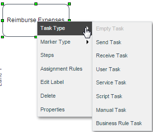
Note: DO NOT change the type of task while there are cases running or assigned to that task. If trying to do that, cases might become unreachable. Instead, it is possible to change the type of task in the process even if there are cases running, but any of them is assigned to the task.
EmptyTask
An empty task is a single action that occurs in a business process, i.e. mailing a form.
This type of task is supported by the ProcessMaker engine and the rest of documentation in this page is mostly based in this task.
Send Task
A send task is a task that sends a message to another process or lane. The task is completed once the message is sent.
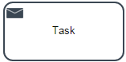
Note: Use this type of task only for design purposes. The ProcessMaker engine manages this task as an empty task.
Receive Task
A receive task indicates that the process is relying on an incoming message from a third party. Upon receiving a message, the task has been performed.

Note: Use this type of task only for design purposes. The ProcessMaker engine manages this task as an empty task.
User Task
- A typical "workflow" Task where a human performer performs the Task with the assistance of a software application.
- The task is scheduled through a task list manager of some sort.
Examples:
- Phone operator updates customer record.
- User changing their password.
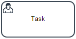
Note: Use this task only for designing purposes. The ProcessMaker engine manages this task as an empty task.
Service Task
A service task is any task that uses an automated application or web service to complete the task.
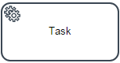
Note: The service task does work but only in the ProcessMaker enterprise version. Review Enterprise Connectors - Service Tasks for more information.
Script Task
This type of task allows a trigger to be executed when the flow arrives to the task. Some of the characteristics of a script task are the following:
- Script tasks cannot start the flow of the process in the regular way; since a script task does not have assigned users, the process won't be displayed in the New Case option. Nevertheless, script tasks can start the flow of the process if the start event is configured as a web entry.
- When the task is ready to start, the engine will execute the script.
- When the script is completed, the task will also be completed.
After adding a script task to the design, configure it by going to its properties to add the code that will be executed.
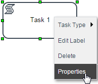
In the window that opens there are two ways to add the trigger that will be executed by the task.
By selecting the trigger from the Title dropdown menu.
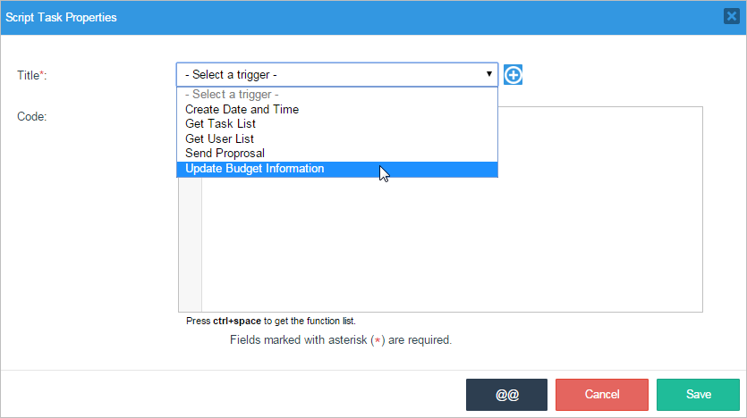
The code added to the trigger will be shown in the Code textarea.
By creating the trigger directly from the window by clicking on the plus symbol (+).
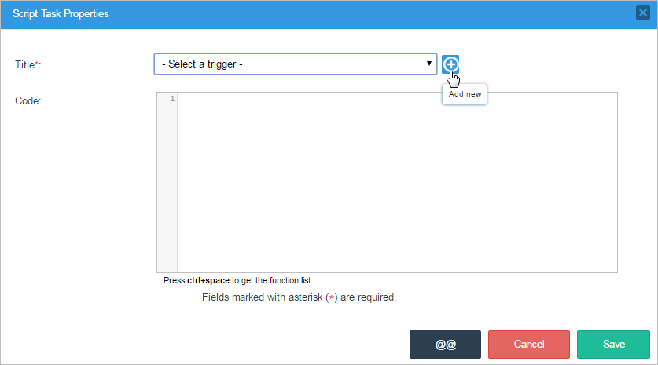
Add the name of the new trigger and the code in the Code textarea.
Save the configuration of the properties of the task that will execute the trigger when running cases.
Note: The system variables which are available during a script task are the variables that were set during the previous normal task in the process, so the value of the @@USR_USERNAME and @@USER_LOGGED variables will be set to the last user who worked on the case. Similarly, @%INDEX will be set to the delegation index of the previous normal task in the process. If the delegation index of the current script task is necessary, then it will be @%INDEX + 1 if the script task follows a normal task, or @%INDEX + 2 for the second script task after a normal task.
Manual Task
A manual task type is used wherever a part of a process has to be executed manually. It can be executed without any outside help or application.
Example:
- A telephone technician installing a telephone at a customer location.
- Loading a truck with product.
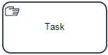
Note: Use this type of task only for design purposes. The ProcessMaker engine manages this task as an empty task.
Business Task
Business rule is an explicit type that was added with BPMN 2.0. Business rules are specific types of services maintained by a business working group, rather than an IT group. The rule shape is used to represent the implementation of a business rule.
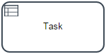
Note: Use this type of task only for design purposes. The ProcessMaker engine manages this task as an empty task.
Marker Type
Markers are used to visually distinguish sub-classes of task objects. By default no marker is defined, this is known as none. Besides that, three different types of markers can be defined, right click on the task and select "Marker Type". Then, select among the three of them:
- Loop
- Parallel
- Sequential

Mark types are merely informative, in future versions their respective functionality will be added.
Loop
A loop task will repeat automatically many times until a defined condition is accomplished. People with a programming background will recognize this marker as repeat-until (or while-do)
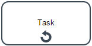
Note: Use this type of marker in the task only for design purposes. The ProcessMaker engine manages this task as an empty task.
Parallel
A parallel task or multiple instance task is a task that happens multiple times. For instance, if different areas in a company need to approve and sign a document.

As of version 3.0.1.4, this kind of execution is supported by the ProcessMaker engine. When the task is marked as parallel, the task will be routed in parallel to all the users/groups assigned in the task. The flow continues to the next task only after all users assigned to the instances of the task have finished their execution.
The parallel marker is available for the following types of tasks:
- Empty
- User
- Manual
- Use the PMFUserList() function in a trigger or the userList() web service or the GET /users endpoint in an external script.
- Do a search in the
USERS.USR_UIDfield in thewf_workspacedatabase, which is namedwf_workflowby default. - Run cases in Debug Mode with tasks assigned to the users and copy the value of the
USER_LOGGEDsystem variable. - Before a step is executed (i.e., Dynaforms, Input Documents and Output Documents).
- After a step is executed.
- Before a user is assigned (designated) to work on the next task is the process.
- Before a case derives (routes) to the next task in the process.
- After a case derives (routes) to the next task in the process.
- Condition. A condition can also be added to determine whether the trigger should fire or not. This condition is also written with PHP code. For more information, see Using Conditions
- Edit Open the trigger editor to edit the code.
- Remove Remove the trigger from the step.
- Script Task
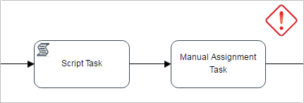 - Sub-process
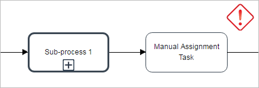 - Actions By Email
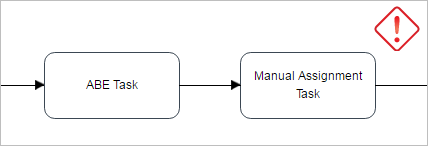 - Start Timer Event
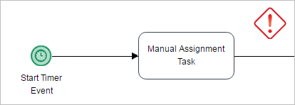 - Start Timer Event + Intermediate Email Event
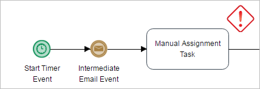 - For the currently logged-in user, use the
@@USER_LOGGEDsystem variable. For example, if the Value Based Assignment variable is@@NextUser, and it should be set to the same user as is designated to work on the current task, then the following trigger code can be used:@@NextUser = @@USER_LOGGED;Note: The variable for Value Based Assignment can not be a system variable such as
@@USER_LOGGED, but the value of a system variable can be assigned to the variable for Value Based Assignment in a trigger as shown in this example. - To get the unique ID of a particular user, go to Admin > Users > Users to see the list of available users. Then, press Ctrl + U to view the HTML source code or use a code inspector such as the Chrome Developer Tools, Firebug or the Firefox Debugger. In the table of users, the first cell in each row is hidden and it contains a DIV with the user's unique ID.
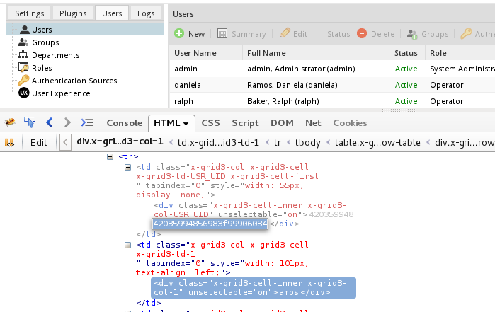 - Lookup the user's unique ID in the wf_WORKSPACE.USERS.USR_UID field in the MySQL database. The executeQuery() function can be used in a trigger, the MySQL command line, or a graphical interface such as PhpMyAdmin can be used to obtain the unique ID:
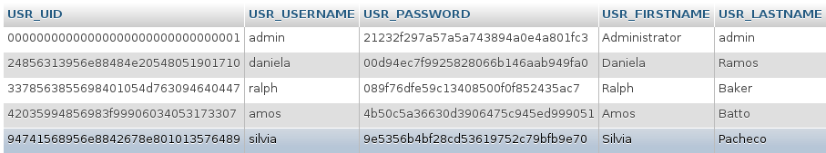
- A dropdown or suggest box can use an SQL query or a prior trigger to populate a list of available users assigned to the task and allow the user to select one. See the examples below.
- Time: Required Field. Time elapsed since to case is derived and sent to unassigned folder. It is not possible to use decimal numbers.
- Time Unit: Time unit expressed in hours and minutes.
- Trigger to execute: Required Field. Choose the trigger which will be fired. If this trigger will send a notification, don't forget to enable email notifications to have notifications working properly. In order to send notifications at the correct timing, the server running ProcessMaker will have to be configured to execute a
Scheduled Taskif using Windows or a cron job if using Linux/UNIX. - Execute Trigger It indicates if the trigger will be executed Once or Every time scheduled by cron.
- Once: It doesn't matter the content of the trigger, it will be executed just once.
- Every time scheduled by cron: The trigger will be executed depending on the cron configuration.
- For a single user:
@@selfServicePool = "24856313956e88484e20548051901710"; //unique ID of a user
- For the members of a group:
@@selfServicePool = "75310693956e884c026c941010229288"; //unique ID of a group
- For an array of users and/or groups:
@@selfServicePool = array(
"24856313956e88484e20548051901710", //unique ID of a user
"75310693956e884c026c941010229288", //unique ID of a group
"34300353256e8849a610e70014939032", //unique ID of a user
@@USER_LOGGED //unique ID of the current logged-in user
); - If the current task assignment rule is not Self Service or Self Service Value Based and is assigned to another user.
- If the current task assignment rule is set as Self Service or Self Service Value Based but the user is not able to claim this case, whether the case was claimed or not.
- If the current task assignment rule is set as Self Service or Self Service Value Based and the user is able to claim but the case is already claimed.
- Have the PM_REASSIGNCASE permission in their role
- Have the process permissions to open the case
- Have a Process Supervisor permission to manage cases
- There are temporary or part time employees that are not always available to work on the task, so they should only be assigned to the task when available. A manager or the normally assigned users could reassign the case to the temporary employee when at work.
- The workload for employees often changes, so a manager needs to decide which employees are best able to handle the cases. The task is assigned to the manager by default and he/she then looks at the workload and reassigns the case to one on the employees who have ad hoc assignment to the task.
- The normally assigned users generally handle the task, but there may be special cases which can only be handled by a manager. Do an ad hoc assignment of the manager to the task and give all the normally assigned users the PM_REASSSIGNCASE permission. When a special case arises, they can reassign the case to the manager to handle it.
- UID. A 32 hexadecimal number which uniquely identifies the task. The UID cannot be edited.
- Title. Required field. The title or label of a task, which is displayed on the Process Map. It is recommended to use verb-noun combinations in the title, such as "Claim Process" or"Review Application".
- Description. Give a brief description to the task. It is recommended to describe what work is done and who will be assigned to that work.
Variable for Case priority. A variable or fixed integer which determines the priority of an task. The priority of a case can be between 1 and 5:
-
- 5 - Very High
- 4 - High
- 3 - Normal
- 2 - Low
- 1 - Very Low
Use the @@ button to select either case or system variables. By default, the priority of cases is determined by a system variable named @@SYS_CASE_PRIORITY, which has a default value of 3 (Normal priority), but that value can be changed by setting the value of @@SYS_CASE_PRIORITY in a trigger (or in a Dynaform field named "SYS_CASE_PRIORITY"). However, the case priority can be determined by a custom case variable. For instance, the case variable @@approvalTaskPriority could be used and its value could be set in a trigger which examines the case data and determines the appropriate value. Likewise, its value could be set in a Dynaform dropdown box named "approvalTaskPriority" which allows the user to select the appropriate priority.
The priority of a task is displayed in the Priority column in the inbox and draft trays, and in the Review option under the Process Supervisor menu.
Users can sort their cases by priority by clicking the little arrow in the Priority column and clicking the ascending or descending option. For example, select the Sort Descending option so priority 1 cases appear at the top of the list and priority 5 cases appear at the bottom.

-
- Routing Screen Template. Process designers can personalize the screen template which is shown to the user when completing a task and routing to the next task or sub-process in the process. Each task may have its own routing screen template.
Title. By default, the case title is the case number, such as
#45. In this field, titles can be assigned to cases, as well as variables can be inserted inside the title. Use the [ @@ ] button to view what variables are available and insert them in the title.As of ProcessMaker 3.1.2, the case title could be modified in each task as this is a unique title for the whole case.
Description. In this field, descriptions can be assigned to case, and it can be as descriptive as needed. Use the [ @@ ] button to view the list of available variables and insert them in the description.
- In the following graphic, Task 2.1 has its own case title opposite to Task 3.1, which Task 1 inherits its case title.

- Case title inherits from the previous title, even when it was defined previously in many tasks before the current one.
- In the following graphic, the Task 2.2 title is Title B because that was the title defined in the previous task of the thread. While the Title A of Task 1 inherits the Task 3.2 title.
- The title of the last closed thread will be used if the case title after a converging gateway is not defined. In the graphic below, The Task 4 title is Title B (same as Task 2.2) because Task 2.2 was the latest completed thread. However, the Task 4 title might have been Title C if Task 3.2 would have been completed after Task 2.2. The best practice to avoid this behavior is to define the title in Task 4.
- It is recommended to define the title when it has multiple incoming flows. The graphic below describes how the Task 2 title was first named Title A, then it changed to Title B when the flow came back from Task 3 to Task 2.
Allow user defined timing control: This option allows the user assigned to the previous task in the process to manually define the time scheduled for the next task when a case is routed. If this option is checked, when the case is about to be routed to the next task, the following fields will be displayed:
Task duration: An integer defining the duration of the task an integer. Negative and decimal numbers are not allowed.
Time unit: The unit of time, which can be hours or days.
Counts days by: The duration of the task, which can be counted in work days (Monday through Friday) or calendar days.
Calendar: Select a calendar, which the task duration will be based on. If no custom calendars have been created, then the "Default" calendar will automatically be selected; otherwise select one from the list.
Get the latest Delegation Date (from the server)
Convert the Delegation date to the next user timeZone
Calculate the Due Date base in Default Calendar
Convert to Due Date to UTC timezone
- Enables this task for offline use: Enables or disables a task for offline use. If checked, a checkbox displays to set up the task behavior when back online.
- Route case when back online: If checked, routes the case when back online, otherwise the case must be routed manually.
For this type of task, the assignment rules change so tasks only have two options to route the task "in parallel": Parallel Assignment and Value Based Assignment. Each user assigned to a parallel task works on a different instance of the task. All the instances are created at once, so all the assigned users can work on their instances of the task at the same time.
Parallel Assignment
Select this option to add users and/or groups to the Assigned Users list. The users in this list will do the task in "parallel", which means that each user in the list can do the task at the same time.
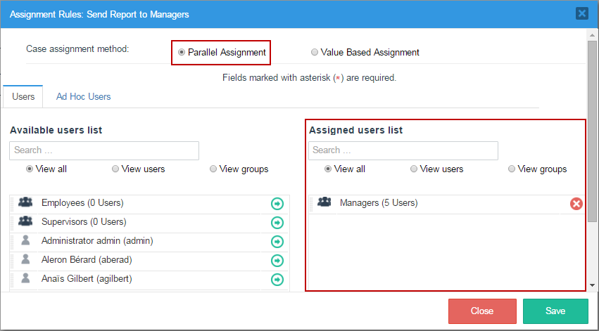
When running cases, the routing window will show the list of users assigned to the task.
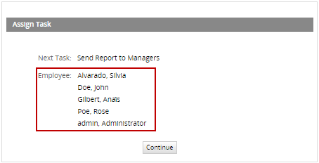
The flow will continue to the next elements in the process after all users assigned to the parallel task have routed the case.
Parallel: Value Based Assignment
Select the Value Based Assignment option to allow a variable that specifies which users will be assigned to work on instances of the parallel task. The value of this variable is an array of the unique IDs of the users to be assigned to the parallel task. These unique IDs can be obtained in the following ways:
Example:
An array variable is created in the process named "assignedUsers". This variable is set in the Array of Users box for Value Based Assignment in the Assignment Rules for the parallel task.
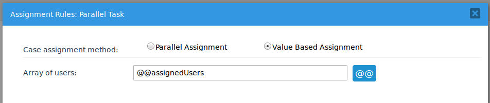
Then, the following trigger is executed before assignment in the previous task in the process to set the value of the @=assignedUsers variable:
@@assignedUsers = array(
"00000000000000000000000000000001", //ID of admin
"153839111564b98d5e35983081025138" //ID of Mary Jones
);
Note: DO NOT use a system variable as the variable for the assigned users in a parallel task. For example, do NOT use the @@USER_LOGGED system variable.
Note: When running cases, if the message "Invalid Task Assignment method for Next Task" is shown, it means that the configuration of the parallel task has not been saved correctly. To solve this issue, please re-save the configuration of the task to solve this issue.
Sequential
A sequential task allows users to execute code sequentially using a script.

Note: Use this type of marker in the task only for design purposes. The ProcessMaker engine manages this task as an empty task.
Steps
In ProcessMaker a step is a piece of work that forms a clearly defined action within a task. A step can be a manual action such as filling out a Dynaform or uploading a Word document to use it as an Input Document, or it can be workflow action which is automated. There are 5 types of steps in ProcessMaker: Dynaforms, Input Documents, Output Documents, Triggers, and external.
To view the steps assigned to the task or assign new steps to the task, select the "Steps" option from the task menu context:

A modal window opens where the list of elements available within the process are listed in the "Available Elements" panel. These elements are organized according to their category into "Triggers", "Dynaforms", "Input Documents", "Output Documents" and "Externals". On the other hand, the elements already assigned to the task are listed inside the "Assigned Elements" panel. This panel has three sections to distinguish the execution of these elements as the task is running in a case.
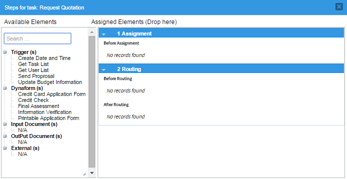
This panel has a "Search" field where it is possible to directly search for an element just entering its name in this field. This is very helpful when there are several elements and looking for them among the list becomes exhausting. All matches are listed below as the text is entered.
The Dynaforms, Input and Output Documents must be assigned in the first blank space of the panel. To add a step to the task, one of the elements listed in the "Available Elements" panel must be added in this section. Remember that the execution of the elements assigned in this panel when running a case of this task depends on the order the elements are arranged in this section of the panel.
To add a step to the task, go to the list of "Available Elements", grab an element by its name, and take it to the first blank space of the "Assigned Elements" panel without releasing the button of the mouse. If the element is the first to be added a gray section is immediately marked and the element will be added regardless of where it is dropped. A flash message is shown at the top of the panel indicating that the step was assigned correctly.
For example, if a Dynaform is the element to be added to the steps of the task:
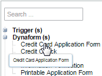
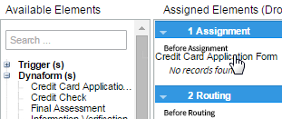
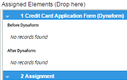
Take into account that after a Dynaform, Input Document or Output Document has been assigned, it will not be longer listed in the "Available Elements" panel. After assigning the first element to the steps of the task, to next steps to be added can be arranged before or after the steps already assigned. To do this, follow the same procedure explained before but, before dropping the element take it up or down any of the elements already added.
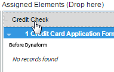
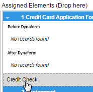
The number assigned to the Step is related to the position of the step in the list of steps assigned to the task. The number also indicates the position of the step in the execution of the task when running a case. The detail of the name of the step also includes the type of element added and the name of the element.
Take into account that after arranging the steps inside the panel, it is possible to re-arrange them taking the step from its name (the gray background color), dragging it before another element and dropping it in its new position.
Managing the Steps of a Task
After assigning the steps to the task, each of them can be edited (according to the element), removed or changed in its properties when running a case. The options to do that are in the right-hand corner of the step.

Properties: Select this option to add the View or Edit property to the step. It is also possible to add a condition for each step. This condition is a PHP expression.
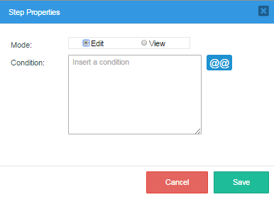
The step will only be executed if the condition evaluates to True. Remember that in PHP, an expression is True if evaluates to a non-zero value, so: -10, 10.23, "10", and "hello" are all True.
While "", 0, and "0" are all False. Variables can be used in the expression, allowing the process to check different factors when deciding whether to execute a step or not.
For more information, see Using Conditions.
Note: The "Mode" option is only available for Dynaform steps in the task.
Edit: Select this option to open the Dynaform designer editor, the trigger editor, or to edit the configuration of the Input or Output document.
Remove Select this option to remove the element from the steps of the task. In the message box that opens, click on "Delete" to remove the element or click on "Cancel" to close the box and return to the previous list.
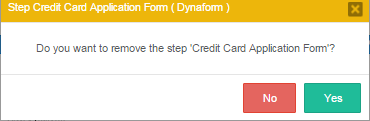
Assigning Triggers to a Task
A trigger is a piece of PHP code that can be inserted into a task and triggered at specific points during the executions of a case:
Remember that the triggers must have been already created inside the process. To assign them to a step, go to the Triggers section inside the "Available Elements" panel and grab the trigger that will be assigned by its name without releasing the cursor of the mouse. Take it where the trigger will be executed. Notice that expanding each step, there are two sections: "Before (Dynaform, Input Document, Output Document)" and "After (Dynaform, Input Document, Output Document)". In the section "Assignment" steps can be placed only "Before Assignment", and in section "Routing", triggers can be assigned "Before" or "After Routing". To learn when to set a trigger and how to work with them check this documentation.
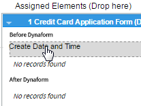
A flash message indicates that the assignment has been successful. Unlike the assignment of Dynaforms, Input Documents or Output Documents, triggers are still available even after an instance of the trigger has already been assigned to a step of the task. Each one of the triggers already assigned has three buttons to customize the execution of the trigger in the step. These buttons are the following:
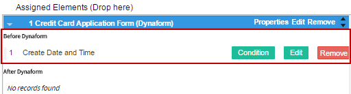
Also move the triggers already assigned among the steps of the task just dragging and dropping them into a new position.
Note: It is not recommended to delete a step while running cases or assigned to the task because it can cause errors and prevent the case from completing. If needed to edit a process which is being used in production, make a copy of the process and edit the new version of the process.
Assignment Rules
The assignment of users that will work on the task and the way these users will be assigned to it is defined by the configuration of the "Assignment Rules" of the tasks. Right click on the task then, click on "Assignment Rules".

The user assignment window is the following:

After creating tasks for a process, user(s) and/or user group(s) need to be assigned to those tasks. Generally it is better to assign tasks to groups rather than individual users, even if there is only one user in the group. The user assignments will be lost whenever a process is exported, but the group assignments aren't lost. After importing a process, it is easier to assign users to groups in ProcessMaker, rather than having to go through all the tasks, manually assigning users. For instance, if your organization has a chief financial officer named Sally Barnes, then create a group called "Chief Financial Officer" and assign Sally Barnes as its member. If the chief financial officer for your organization changes or you need to export all your processes to another server, all you will need to do afterwards is assign a user to the group "Chief Financial Officer", rather than reedit all your processes.
Note: DO NOT change the assignment rule of a task while there are cases running. If trying to do that, the following message is shown:
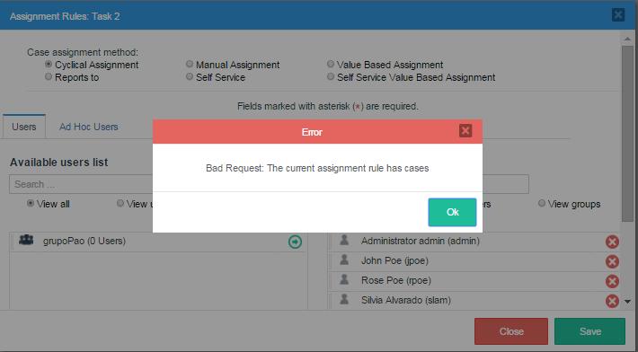
Wait until all cases end to change the assignment rule of any task in the process.
Users Tab
The first section of the window contains the assignment method options with which users will be assigned to the current task (these methods are explained below). To select the assignment method, simply select it from the radio button group.
The second section contains the list of users and groups available in ProcessMaker to be assigned to the task. The first panel is the "Available user list" where the available ProcessMaker groups and users are listed, ready to be assigned to the task. The second panel is the "Assigned user list" that list the users and groups of users already assigned to the task.
To assign a group or user to the task click on the -> arrow as shown in the image below:
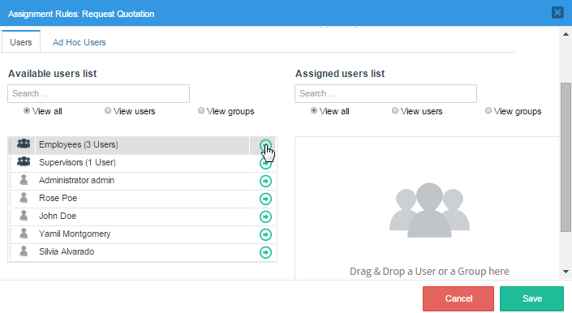
This window also has the drag and drop property to assign users and groups to the task. Thus, simply drag the name of the user or group from the "Available user list" and without releasing the button of the mouse drop it in the "Assigned user list" panel.
If the list of users and groups is very large, use the filters of the panel to find a specific user or group or to filter the list according to a given criteria (also select one of the options "View all", "View users", or "View groups" to filter the list).
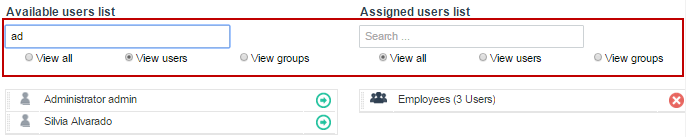
To remove an already assigned user or group from the "Assigned user list" panel, click on the X icon at the right side of the name of the group and user or simply drag and drop it back in the "Available user list".
To explain the assignment methods, let's use the Process "Purchase Request" as an example:
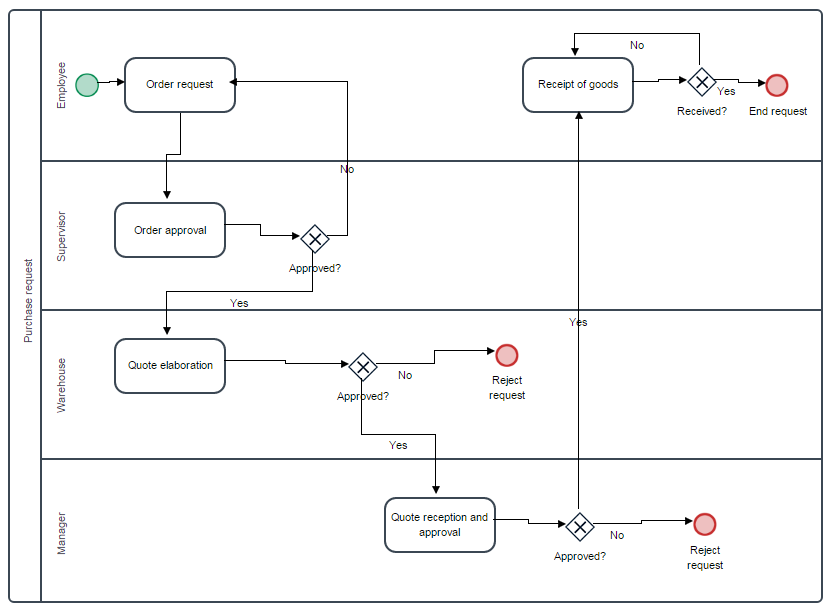
Cyclical Assignment
Cyclical Assignment is the default type of assignment where the task is assigned to a particular user by selecting that user from the pool of available users using the round-robin pattern. In this example, right click on the task "Order approval" and then select "Assignment Rules". A new window will open where the properties to assign rules for this particular tasks is shown. In "Case assignment method" click on the "Cyclical Assignment" radio button and also assign a user/users to work on the task. In this case, the "Credit Supervisor" that is Jane Doe will be in charge of this task.
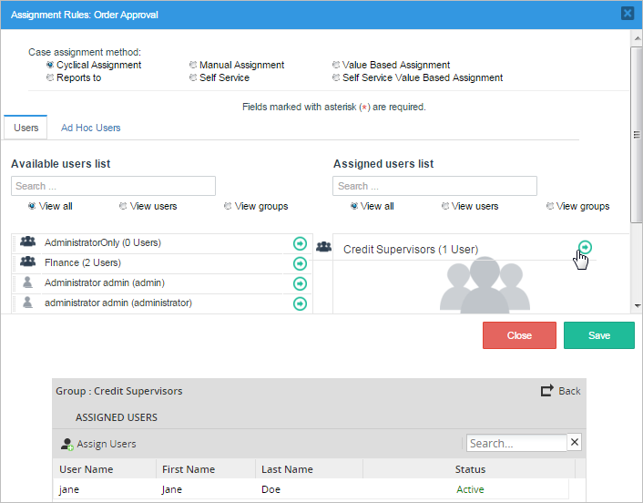
To test the assignment of the user go to "Home" > "New Case" and double click on "Purchase Request". The first Dynaform assigned to that task will open, fill it with the necessary information and click on submit. The next step will show who is in charge of the next task, in this case "Order approval" and the person in charge is the "Credit Supervisor" or Jane Doe as seen in the image below.
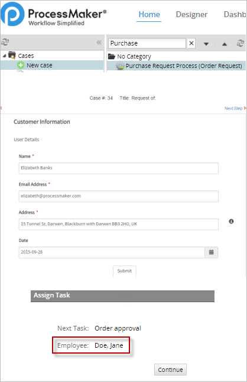
Manual Assignment
With the manual assignment rule, the user who completes the previous task in the process will manually select the user that will be working on the next task in the process.
For example, in the "Order approval" task click on "Manual Assignment" and add to the users list the amount of people that may and can work in this task. In this case we added four employees to the case, click on save to finish with this step.
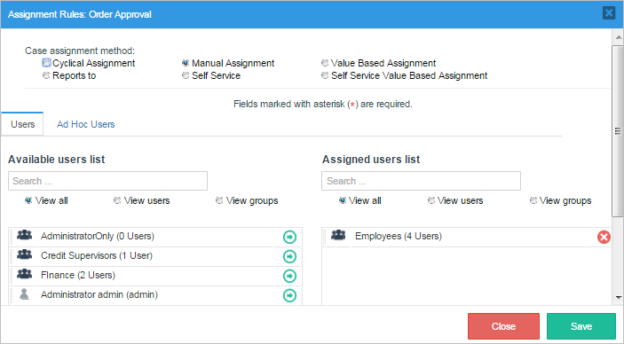
As it is seen in the image below, the task now has an option to be worked on by anyone inside the group employee. Choose the user that will be working on the "Order approval" task and then click on continue

Manual Assignment - Known Issues
Please pay attention to the following known issues before choosing this type of task assignment.
Assignment Form is not displayed
In these cases the assignment form that is displayed when the case is routed to a Manual Assignment task is NOT being displayed when the previous task is one of the following types:
Since a manual assignment task does not have users assigned by default, an error message will be displayed:
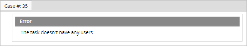
Workaround
To avoid the script task and sub-process issues consider the following workaround:
In the task before the Script task / Sub-Process, add a variable to select the assigned user of the Manual Assignment task. Then, change the assignment type of the Manual task from "Manual Assignment" to "Value based assignment" and provide the variable defined previously.
Failed:ID NO USERS
In the following cases it is impossible for the Cron Script to initiate a case.
Since a manual assignment task does not have users assigned by default, an error will be displayed and the case won't be created.

To initiate a case with the Start Timer Event the initial task must have users assigned.
Web Entry
In the process design shown in the image below, the start event is configured as a web entry followed by a task with manual assignment.
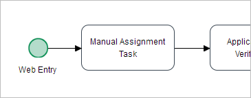
This process design is NOT supported by ProcessMaker. After the user has completed the Dynaform assigned to the web entry, the information message will inform the user that the next task doesn't have any users assigned.
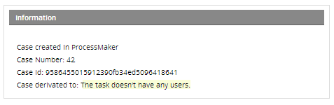
Value Based Assignment
Select this option to use a variable to specify a single user who will be designated to work on the task. Any variable can be used to designate the user, but this variable must be set by a Dynaform field in a prior task or by a trigger which is executed at any point before assignment in the previous task. It is not required that the user assigned by value base is also present in the assignees' list of the task.
Warning: Take care that the user variable sets an active valid user, otherwise, the error message displays: The task doesn’t have any users. As a best practice if the user status changes to Inactive or Vacation, replace the user for another one.
For example, the following trigger sets the user for the next task based on whether the @#amount is greater than or less than 500.00:
@@NextUser = '089f76dfe59c13408500f0f852435ac7'; //UID of Ralph Baker
}
else {
@@NextUser = '4b50c5a36630d3906475c945ed999051'; //UID of Amos Batto
}
Note: The unique ID of a user can be obtained in the following ways:
Remember that the variable used by Value Based Assignment should be set at some point before assignment in the previous task. For example, if using Value Based Assignment in the "Process Complaint" task in the following process, then the variable must be set before assignment or some earlier point in the "Enter Complaint" task.
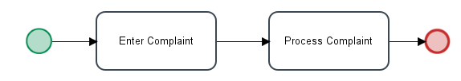If the first task in the process uses Value Based Assignment, then ProcessMaker will ignore its variable and assign the first task to the user who initiated the case. If the case is created with PMFNewCase(), PMFNewCaseImpersonate(), newCase() web service, newCaseImpersonate() web service, POST /cases endpoint, or POST /cases/impersonate endpoint, then it will also ignore the Value Based Assignment and be assigned to the user specified by the function/web service/REST endpoint.
However, the variable for Value Based Assignment will be used to designate the user to work on the initial task if the process is used as a subprocess in another process. The variable needs to be set in the master case and be one of the variables passed to the subprocess case.
The user who starts the case will be assigned to the initial task in the case, but if the process loops back to the initial task, then the variable for Value Based Assignment will be used to designate the user for any subsequent passes through the task.
For example, in the following process, the "Enter Complaint" task uses Value Based Assignment and its variable is @@FirstUser. The user who starts the case will be designated to work on the "Enter Complaint" task when the case starts. However, if the process loops around and sends the case back to the "Enter Complaint" task a second time, then Value Based Assignment will be used.
If needing to send the case back to the same user who started the case. Then create a trigger which is set to fire during the "Enter Complaint" task which saves the current user to the @@FirstUser variable:
The "Enter Complaint" task will be reassigned to the initial user who started the case in all the subsequent passes through the task.
Note 1: If needing to record the user who started the case, then set the above trigger to fire before the first step in the first task. If needing to record which user finished the first task (because the case could have been reassigned to another user), then set the above trigger to fire before assignment in the first task.
Note 2: It is also possible to use the Cases::loadCase() method to lookup which user was assigned to a task, but it is not recommended because the delegation index doesn't always refer to the same task. The delegation index in a case will be incremented each time the case is reassigned to another user. A delegation index of 2 might be the second task in the process or it might be the first task which was reassigned to another user.
Reports To
The "Reports To" assignment rule takes into account your organization's structure (organization chart) as represented by ProcessMaker Departments. It selects the supervisor/manager of the user who completed the previous task in the process to work on the current task. This is a useful option when the process requires that the supervisor review the work of the people in his/her department. If a supervisor for a sub department completes the previous task, then "Reports To" will automatically select the supervisor in the parent department to work on the current task. In this way, tasks can be passed up the chain of command in an organization.
For the next examples, the following part of a organization's structure will be used.
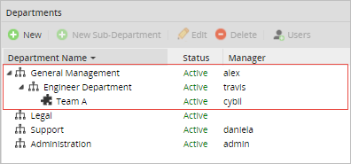
Along with the following part of process "Case Report Process".
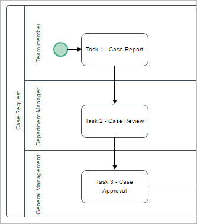
The structure has the following departments, managers and users.
Make right click on the task "Task 1 - Case Report" and select "Assignment Rules". For this task use a "Cyclical Assignment" which will have four users: Cybil (Team A manager), Henry (Team A member), Jonathan (Engineer Department member) and Rose (General Management member).
For the second task "Task 2 - Case Review", right click on it and select "Assignment Rules". This time choose "Reports to" as the assignment method.
For the third task "Task 3 - Case Approval" also select "Reports to" as the assignment method.
In this example, the users "Henry", "Jonathan" and "Rose" work in different departments. Each one of these departments has a different manager. To test the "Reports to" assignment rule, first login with the user "Henry" and go to Home > New Case and double click on the process "Case Report Process" to start a case. Submit the first task and the next user will be assigned to the manager of the "Team A" department. According to the structure of this specific organization, the manager is the user "Cybil" so she is the one chosen for the next task. In case of logging in with the user "Jonathan", the next user will be the user "Travis" who is manager of the "Engineer Department". And for the user "Rose" who is member of the "General Management" department, the case will be assigned to the manager named "Alex".
Additionally, if a manager of a sub-department completes the first task, then the second task that was assigned with the "Reports to" method, will automatically select the manager of the next level sub-department. In this example, the users "Cybil", "Travis" and "Alex" are managers. Therefore, if the user "Cybil" who is a manager completes the task "Task 1 - Case Report", the second task "Task 2 - Case Review" will be assigned to the manager of the "Engineer department" named "Travis". Then, if the user "Travis" completes the "Task 2 - Case Review", the third task "Case Approval" will be assigned to the manager of the next higher department, the "General Management" manager named "Alex".
ProcessMaker stores this information in the USR_REPORTS_TO field in the wf_<workspace>.USERS table.
Note: From ProcessMaker 3.0.1.8 on, the field USR_REPORTS_TO of the wf_<workspace>.USERS table is empty whenever the user is the highest member of their department structure, this include sub-departments.
Take in consideration this change whenever accessing tables values through scripts, triggers, etc. The following code retrieves the UID of the current logged user taking in consideration the empty field.
$data = executeQuery("Select USR_REPORTS_TO from USERS where USR_UID = '$uid'");
@@supervisor = $data[1]['USR_REPORTS_TO'];
if ($data[1]['USR_REPORTS_TO']==""){
@@supervisor = @@USER_LOGGED;
}
If the field USR_REPORTS_TO is empty, ProcessMaker will use the UID of the current user. Please see the special case No higher department.
Special Cases
Sub-Department without Manager
If a sub-department does not have a member assigned as manager, then the next task will be assigned to the manager of the next level sub-department/department. Following the previous example, in this case the user "Cybil" is no longer manager of the Team A sub-department.

Therefore, when a case is opened and the first task is completed by one of the members (either "James" or "Henry") of the "Team A", the second task will be assigned to the manager of the "Engineer Department" named "Travis".
If the next sub-department does not have a manager assigned, the next task will be assigned to the next department in the structure with a manager assigned.
If a member of the "Team A" department initiates a case (in this case, the user "Henry") the second task will be assigned to "Alex", the manager of the "General Management" department.
Manager with status Inactive / Vacation
In this special case, the manager has him/her status as Inactive or Vacation. Therefore, the next task will be assigned to the user assigned as the Manager's "Replaced by". For example, if the manager "Travis" is on vacations.
The tasks that was assigned to him, will be redirected to the user assigned in his "Replaced by" configuration. In this case, the user named "Jonathan".

Departments without managers
If the organization's structure does not have any user assigned as manager. The "Report to" method will assigned the task to the same user that completed the previous task.
In this example, if the user "Cybil" completes the first task of the process, the second task will be assigned to her too. Since there is no supervisor or manager assigned in neither of the departments.
No higher department
In case of starting a case with the highest member of the top level department (the user "Alex" in this example), the next task will be assigned to the same manager who completed the previous task.
Self Service
A Self Service assignment rule allows any user from the pool of assigned users to claim the case and work on the task. In other words, the user will have the power to assign himself/herself to work on the task. Self Service can be used to reduce congestion in the workflow, especially when the users can best judge their capacity to take on new cases.
To assign this kind of rule go to the process and right click on it, select "Assignment Rules". Click on the "Self Service" option.
For testing purposes go to "Home" > "New Case" and double click on "Purchase Request Process". Fill the Customer information form and submit it. For the next task the assignment will be listed as Unassigned which means that anyone can claim the case to fulfill the task including the previous user.
Warning: Cases with tasks that use both Self Service and the Self Service Value Based assignment rule are located in the Unassigned list (except Ad Hoc users).
Setting time limit to claim a case
When a case use Self Service assignment rule or Self Service Value Based Assignment assignment rule, any user from the pool who is assigned in the task with this rule defined could claim the case, on previous versions if nobody claims the case it will remain on the unassigned folder forgotten by users or even users may not know that they have a case to claim.
To avoid this conflict, a time limit was added, which allows users the possibility to configure time the case will be remain on the unassigned folder, if that time is surpassed, a Trigger will be executed automatically, for instance that trigger could send a notification which would indicate there is a case to claim, it could derive the case, etc. The trigger will execute while the case remains in the unassigned folder; configure the trigger if it requires to be executed only once.
When Self Service option is chosen inside Assignment Rules a new option will be enabled:
Set a Timeout option is enabled, as this option is optional, user may select this in case a time need to be configure for claiming the case. When this option is selected, parameters to set time displays.
Note: As of ProcessMaker 3.5.9, the time for the Set a Timeout option does not take into account the default calendar or the one assigned to the task. This time behavior occurs when setting the Unassigned Case in the Cron Syntax or the Task Scheduler.
Where:
For more information, see Timeout Triggers for Self Service Tasks.
Self Service Value Based Assignment
Self Service Value Based Assignment is similar to Self Service, but uses a variable to specify which of the users who are assigned to the task can claim the case. The variable can be set to the unique ID of a single user, a single group of users or an array of users and/or groups. In this way, the users who are allowed to claim the case can be set dynamically.
Note: Make sure to use ONE variable for each task set with this type of assignment rule, in order to NOT overwrite the value of the variable.
This assignment rule also has the option of Setting time limit to claim a case.

Any variable can be used for Self Service Value Based Assignment, but this variable must be set by a Dynaform field in a previous task or by a trigger which is executed at any point before assignment in the previous task. For example, if the variable used for Self Service Value Based Assignment is named @@selfServicePool, then it can be set in the following ways:
For ways to get the unique IDs of users, see Value Based Assignment above. The unique IDs of groups can be found by using the following SQL query to look it up in the wf_WORKSPACE database:
Remember that the variable used by Self Service Value Based Assignment should be set at some point before assignment in the previous task. For example, if using Self Service Value Based Assignment in the "Process Complaint" task in the following process, then the variable must be set before assignment or some earlier point in the "Enter Complaint" task.
If the first task in the process uses Self Service Value Based Assignment, then ProcessMaker will ignore its variable and assign the first task to the user who initiated the case. If the case is created with PMFNewCase(), PMFNewCaseImpersonate(), newCase() web service, newCaseImpersonate() web service, POST /cases endpoint, or POST /cases/impersonate endpoint, then it will also ignore the Self Service Value Based Assignment and be assigned to the user specified by the function/web service/REST endpoint.
However, the variable for Self Service Value Based Assignment will be used if the process is used as a subprocess in another process. The variable needs to be set in the master case and be one of the variables passed to the subprocess case.
The user who starts the case will be assigned to the initial task in the case, but if the process loops back to the initial task, then the variable for Self Service Value Based Assignment will be used for any subsequent passes through the task.
For example, in the following process, the "Enter Complaint" task uses Self Service Value Based Assignment. The user who starts the case will be designated to work on the "Enter Complaint" task when the case starts. However, if the process loops around and sends the case back to the "Enter Complaint" task a second time, then Self Service Value Based Assignment will be used.
As of ProcessMaker 3.2.2, take into consideration the following points:
The following message will be displayed:

Ad Hoc Users
Note: Before ProcessMaker 3.0.1.7, Ad Hoc Users could start cases when they were assigned to the first task of a process. As of ProcessMaker 3.0.1.8, this behavior is no longer available.
Ad hoc assignment of users/groups to tasks makes those users/groups available to be reassigned to the task, but these users/groups are not assigned by default to the task when it starts. A user can manually assign a task to a member of an ad hoc user/group under the following conditions:
Ad hoc assignment can be useful in a number of situations. For example:
Ad hoc assignment can also be used for automatic review of the task by another user after it has been completed by the normally assigned user.
To assign ad hoc users, do the following steps:
1. On the Designer tab, double click the process.
2. Select the task that you want to assign an ad hoc users/groups by right clicking on the task and select the Assignment Rules.
3. Switch to the Ad Hoc Users tab and assign the users.
Take into account that when users are assigned in this window, it is not necessary to have any additional configuration to set Ad hoc users.
To reassign a task where the ad hoc assignment was set, follow these steps:
1. Go to Actions > Reassign.
2. Choose one user from the list.
3. In the Reason to reassign this case field, provide a reason for the reassignment.
4. Click Reassign.
A confirmation message displays.
After the normally assigned user completes the task, the case will automatically be reassigned to one of the Ad hoc users to review the steps in the task and verify that it was done correctly.
Assignment Window Performance
Finally, take into account that all users and groups creates in ProcessMaker are shown in the list of users and ad hoc tabs. Also, notice that the "Assignment Rules" window has a new improved interface with a new pagination feature. Pagination supports a large quantity of user in the interface allowing the navigation through the already added Users/Groups/Departments and each page lists up to 8 Users/Groups/Departments. The list of eight can be passed from the "Available users list" to the "Assigned users list". This type of management improves the performance of the listings when there is a great quantity of users/groups (like 40000) in ProcessMaker.
Edit Label
It is possible to edit the label of a task. Select the "Edit Label" option inside the Task Context Menu
The label will be editable, so change it and press Enter to apply changes:
A label can also be edited by double clicking on its name.
Note: Take into account that the name of the task should not be changed when there are cases being executed in this task. If needing to change the name of the task, then take into account that cases that have already being started in the process will not update the name of the task in the lists.
Delete
To delete a task or sub-process right click on it and then select Delete in the task context menu. The "Del" button on the keyboard can also be used to remove it.
Before a task may be deleted, any users or groups assigned to the task must be unassigned from the task. Task also cannot be deleted if there are active, paused or canceled cases in that task.
Any active or paused cases should be completed, before deleting the task. If cases were canceled in the task, then the only way to delete the task is to first go to the Designer menu and select the process in the list. Then, click the Delete Cases button to eliminate all the cases for that process in the database.

If needing to keep the existing cases, then another option is to export the process and reimport it as a new process, so it does not have any existing cases and the task can be deleted.
Properties
The task properties should be the first option to configure. In the modal window that opens there are various options to configure the task and give it major functionality and control. Select and fill the options that will fit better the definition of the task.
Definitions
Case Labels
Case Labels are used to provide a clear, descriptive reference for a case. They are used to provide a title and description for cases per thread, so they can easily be identified in a list of cases. System and case variables can be inserted inside these labels to customize the information. Users can search for particular cases using the case titles and the case descriptions are displayed in the "Case Summary".
Note:
It is not recommended to change the Case Label because after routing, the case has a different del_index.
Use the Case Thread Title to register a case label per thread in a case. For example, if you configure three different tasks using parallel routing, you define three threads in a process. As a result, each thread can have its own case label as displayed in the following example.
It is highly recommended to avoid entering long strings of text in the Case Thread Title column. The Case Labels purpose is to provide a clear, descriptive reference for a case. Use Case Labels to reference and identify your case and status on the process's workflow as a good practice as displayed in the following example.
Note: Normally, the registry of long strings of text is not handled correctly in any web app or mobile application product. It's a good practice to use "..." to resume the text and set a maximum width value for the column.
Both the case title and description can be viewed inside the summary of a case:

Case Title in Parallel Tasks
Available Version: As of ProcessMaker 3.6.0
A process architect with proper permissions is able to change the Case Title in parallel tasks. The use of Case Titles strengthens the differentiation of multiple threads in a case list when using Parallel Gateways. Consider that if the case title is not defined, it displays the case title of the previous task. Case Titles also display in a case list to search cases easily. For more information about how to set the Case Titles, please check the section above.
The examples below display how Case Titles work when set or not:
Note: For further information about how to check case details, please follow this link.
Using Variables in Case Labels
If the variable is referenced as @@variable, then its value will be enclosed in double quotation marks and any single and double quotation marks will be escaped with backslashes, when inserted in the case title and case description. For example, if the case title is: Last Name @@lname and the value of @@lname is O'brien, then the case title will be: Last Name "O\'brien"
If the variable is referenced as @#variable, then its value will be inserted without any changes in the case title and case description. For example, if the case title is: Last Name: @#lname and the value of @#lname is O'brien, then the case title will be: Last Name: O'brien
Remember that variables associated with checkboxes, dropdown boxes and suggest boxes have both the value of the selected option stored in @#variable and the label of the selected option stored in @@variable_label. For example, to display the label of the selected option in the "clientType" variable, then the case title would be @#clientType_label.
Some types of variables such as arrays (used by checkgroup controls), grids and files may not convert easily into strings that can be inserted in case labels. If needing to include these types of variables in a case label, it is recommended to use a trigger executed beforehand which transforms the value of these variables into string variables which can be inserted into the case label.
For example, the following trigger code executed in the previous task would get the filename uploaded in a file control associated with the @@contractFile variable and places it in the @@contractFilename variable.
if (isset(@@contractFile_label) and !empty(@@contractFile_label)) {
$aFile = json_decode(@@contractFile_label);
if (count($aFile))
@@contractFilename = $aFile[0];
}
Then, the @#contractFilename variable might have a value such as "signedContract_2016-10.pdf" which can be inserted in a case title.
Likewise, the following trigger gets a list of the options selected in a checkgroup associated with the @@selectCountries variable and places the labels in the @@selectCountriesNames variable:
if (isset(@@selectCountries_label) and !empty(@@selectCountries_label)) {
$aCountries = json_decode(@@selectCountries_label);
foreach ($aCountry as $country) {
@@selectCountriesNames .= (empty(@@selectCountriesNames) ? '' : ', ') . $country;
}
}
Then, the @#selectCountriesNames variable might have a value such as "Argentina, Holland, Gambia" which can be inserted in a case description.
Timing Control
This property is used to set a task's due date. The task should be completed within a determined time period, which can be set according to a number of work days or days in a customized calendar.

There are five options to set:
If the time set to complete a task has already passed, the time will be displayed in red under the "Due Date" column in the list of cases found at HOME > Inbox meaning that the case needs to be handled promptly. If the user still has time to complete the task, the due date will be displayed in green.
ProcessMaker Timing control handles the timing control between users that have different timezones set in their user parameters by calculating the availability hours based in a custom calendar if there is one.
ProcessMaker follows these steps in the described scenario:
The due date is calculated based on the timeZone belonging to the user that is routing the case to the next task.
Notifications
This task property is used to send an email notification to the next assigned user in the case. Make sure that ProcessMaker is configured to use an email server.
To see the notification options in a task, follow the next steps:
1. Log in to ProcessMaker with the PM_FACTORY permission.
2. Go to the Designer tab.
3. Create or simply edit a process.
4. In the Process Map, right-click a task.
5. The task properties display. In the dropdown menu, select the Properties option.
6. The Activity Properties window display. Click the Notifications option.
7. The notification options display to the right side.
For more information about the notification options, see Notifications.
Mobile
Available Version: Improvement available as of ProcessMaker 3.2.2.
Mobile properties allow the user to set up a task for offline use.


Examples
Value Based Assignment Example
This example shows how to use Value Based Assignment whose variable is set by trigger which looks up the unique IDs of the user based upon the username. Starting with a process named "assignment Rules" and it will have an Start Event, two tasks and an End Event, in which both tasks will have different assignment rules and steps to follow.
For this assignment based on values create two variables. The first variable named "Amount" will be chosen in the Dynaform more precisely in a Textbox "Amount". The second variable is "NextUser" which will be used in a trigger code.
Next, create a Dynaform with the name "Amount", which will have only a Textbox control and a button to submit the amount inserted. This text will be filled with a number, if it's equal or bigger than 1000 it will chose the user "Rose Poe" and if it's less than 1000 then it will the user "Gabriela Calderon".
Now for the trigger, programming code is needed for the choice of the user. The next code can be used for this example:
$NextUsername = 'gabriela'; //the local manager
else
$NextUsername = 'rpoe'; //the regional manager
//look up the UID for the $NextUsername in ProcessMaker's MySQL database:
$query = executeQuery("select USR_UID from USERS where USR_USERNAME='$NextUsername'");
@@NextUser = $query[1]['USR_UID'];
We used the variable just created at the end of the code, @@NextUser is the value in which the process is basing itself on.

Now, add all the Dynaforms, steps and rules needed for this example to work. First, right click on "Task 1" > "Steps" and drag and drop the Dynaform "Amount". Also add the trigger to obtain the user's information, save and exit. Right click on "Task 1" > "Assignment Rules", for the first task will leave it to a "Cyclical Assignment" rule.
For "Task 2", right click on it and select simply "Assignment Rules". In here the case assignment method is "Value Based Assignment" a new field named "Variable for Value Based Assignment" will appear where the variable "@@NextUser" must be added, click on the "Save" button to store all changes.
Run the case by going to "Home" > "New Case", double click on the process "Value Based". The first Dynaform will appear, fill the amount with 1100, submit and the person assigned to the next task is be "Rose Poe", this proves that the trigger is working correclty.
If the amount is less than 1000 like for example 700 then the person assigned to the second task is "Gabriela Calderon".

Self Service Value Based Assignment Example
To test Self Service Valued Based Assignment, create a new process with one Start Event, two tasks and an End Event.
Now, create two variables: "dropdown" type string and "Groups" type string as well. Both variables will work with the process to call all the stored Groups in ProcessMaker.

Create a Dynaform that will have a dropdown control and a submit button. Also this Dynaform will have an SQL sentence that will look at the groups stored in the ProcessMaker data storage:
Now, assign the steps and rules for both tasks. Right click on the first task and select "Steps" and add the Dynaform created before named "Groups", remember this will be populated by the ProcessMaker stored groups. The user will choose one for the groups and therefore as the case will be unassigned the employees inside the group can chose to work on the case or not. Also in "Task 1" right click on it and select "Assignment Rules", for this task select a "Cyclical Assignment".
Now, for "Task 2" select "Assignment Rules" and in this case the method will be "Self Service Valued Based Assignment" and the variable will be @@Groups. This will call the groups and the people assigned to that particular group.
With every configuration made is time to test it, go to "Home" > "New Case" and double click on "Self Service Valued Based". When is initiated the dropdown will show all the groups in the ProcessMaker storage. For this example, choose the group "Finance" that has only one user and that is "John Doe" and then submit it. As seen in the image below the second task is unassigned.

To verify if this is really working, log out and login as the "Finance" employee John. Once inside, check the Unassigned inbox and the case just started will appear there. If the group had more users then any of them could enter and claim this case to work on it. For this example, double click on the case to claim it. The next window is only an end process window but in other cases when the process is bigger the John would have to do the next task or it will depend on the assignment rule given in a process.
Unclaiming a Self Service Task
After a user claims a case with a self service task, there is no built-in function in ProcessMaker to unclaim that case and allow another user to claim the case. However, it is possible to unclaim a case by adding a loop around which routing back to the same self-service task.
To allow users to unclaim a case, first create a string variable named unclaimCase. Then, add an exclusive gateway after the self service task which has a path that routes back to the self service task.

In the Properties of the exclusive gateway, add conditions to control the routing. If the @@unclaimCase variable equals 'yes', then the process will loop back to the self service task; otherwise, it will route on to the next task in the process.
Then, add a submit button to a Dynaform in the self service task, which has the ID unclaimCase. Take into account that the button control is not used as a variable. This button control is asociated to a hiden control to work correclty as described in the JavaScript below.
Then, add the following JavaScript code to the Dynaform to set the value of the @@unclaimCase variable to 'yes' when the Unclaim Case button is clicked:
$("#unclaimCase").setValue("yes");
$("#1711683455e78eb2cce3f49029501488").submit();
});
When the Process Claim task is completed, the case routes back to the same task and all the users in the assignment pool for the task are available to claim the case. If needing the case to be immediately unclaimed, then, create the following trigger which uses the PMFDerivateCase() function to immediately route on the case to the exclusive gateway, which is set to fire after the Dynaform containing the Unclaim Case button:
Set the above trigger to fire after the Dynaform which contains the Unclaim Case button.